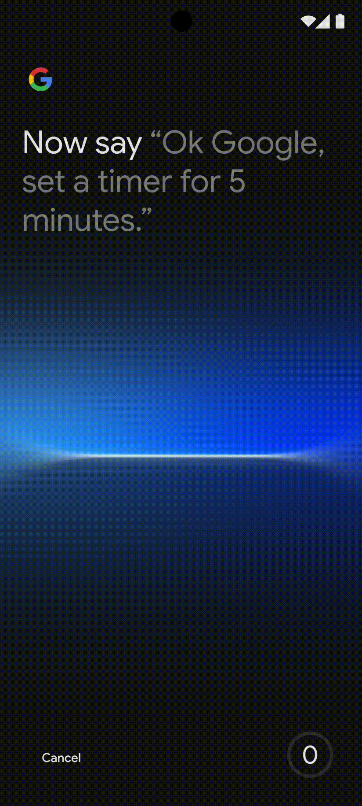
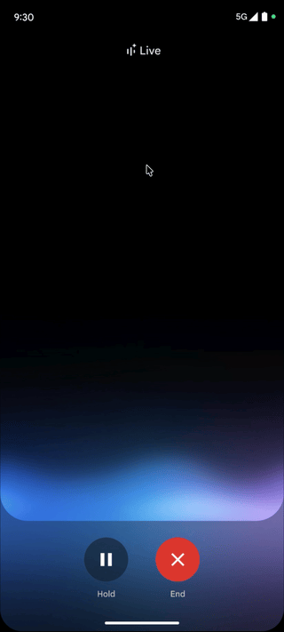
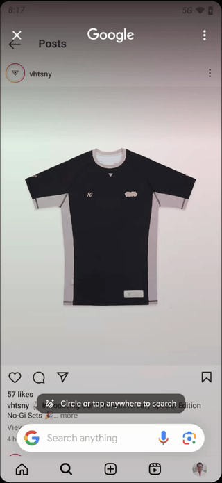
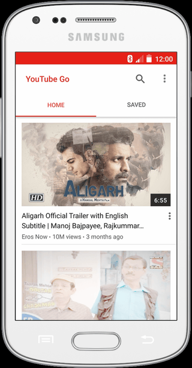

AI Design Lead & Program DRI
Multimodal Experience • Gemini on Android XR • Launching Fall 2026
Gemini on smart glasses: audio-first, no screen, no established playbook. Every convention Gemini relied on assumed a phone — no confirmation it heard you, no clear way to end a turn. I traded actual latency for perceived, replaced the fixed mic timeout with a two-tier system, and adapted sixteen tools for the form factor.
Notable Results

AI Design Lead & Cross-Org Strategy
Enrollment, Consent, Management • Assistant → Gemini • Launched Q4 2025
Voice Match is how Google products recognize you when you speak. Enrollment had fragmented into 72 separate flows — users re-enrolled from scratch on every new device, costing 30% of enrolled users year over year. I collapsed it into one consent that carries across devices, running four workstreams specced for six partner teams to implement.
Notable Results

AI Design Lead
Voice Identity, Onboarding, Controls • Gemini Live • H2 2026
Gemini Live lets you choose the voice you talk to. But that identity lived in settings, disconnected from the conversation it defined — users loved the voice they picked, then couldn't find it again. I moved selection into the Live experience itself, testing three entrypoints and three control patterns before landing on an integrated model with educational onboarding.
Current Status

Design Lead
Voice Input, Refinement, Transcription • Assistant × Search × Samsung • Launched Q3 2024
Circle anything on your screen, then refine the result by image, text, or voice. Image and text refined in place — voice threw you to a blank full-screen page and discarded what you'd just circled. Brought in from Assistant to advise, I authored the alternative instead, aligned Search and Assistant in four weeks under code-complete pressure, then resolved six open decisions before design lock.
Notable Results
Design Lead & System Owner
Workshop → Components → Adoption • Google Design Platform • Launched Q3 2024
Text-to-speech looked and behaved differently in every Google product. Harmonizing it meant getting teams that had never shared a pattern into one room — so I ran a cross-functional workshop with designers, PMs, and researchers to define what a shared voice experience should be. I directed two designers building out the component library, and the system that came out of it — voice settings, a long-form player, display controls — shipped across four surfaces.
Notable Results

Feature Design Lead
Offline Experience, Storage • YouTube for NBU • Launched Q3 2016
YouTube rebuilt for 2G, pay-as-you-go data, and low-end phones. Eight field trips across India, Indonesia, and the Philippines found users so overwhelmed they feared one wrong tap would break the phone. The feed I proposed deprioritized the metadata feeding watch time — YouTube's north-star metric — so I argued it through leadership: for a user who won't tap, watch time is already zero.
Notable Results